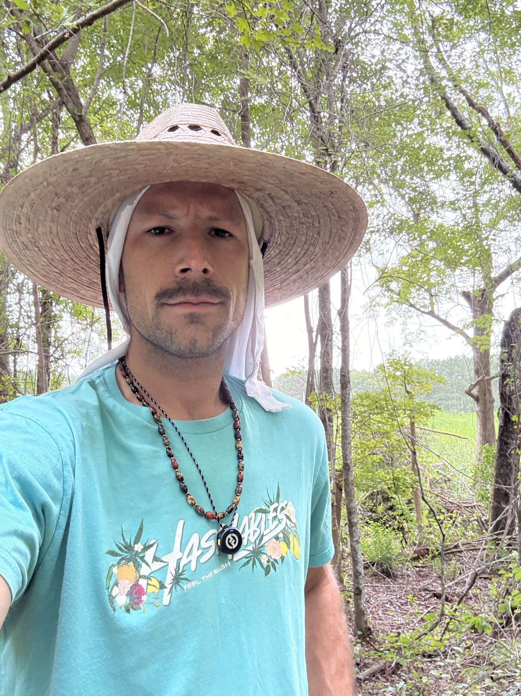

Orenda Pastures is a 25-acre regenerative farm built on sound money in Lake City, South Carolina.
My dad and I founded the farm to build food systems that will feed our community while improving the ecology of the land long after we both are gone. We operate on a Bitcoin standard to store whatever surplus value we create for society in the greatest money ever discovered.
Subscribe for free to follow along and explore the intersection of regenerative agriculture and sound money.